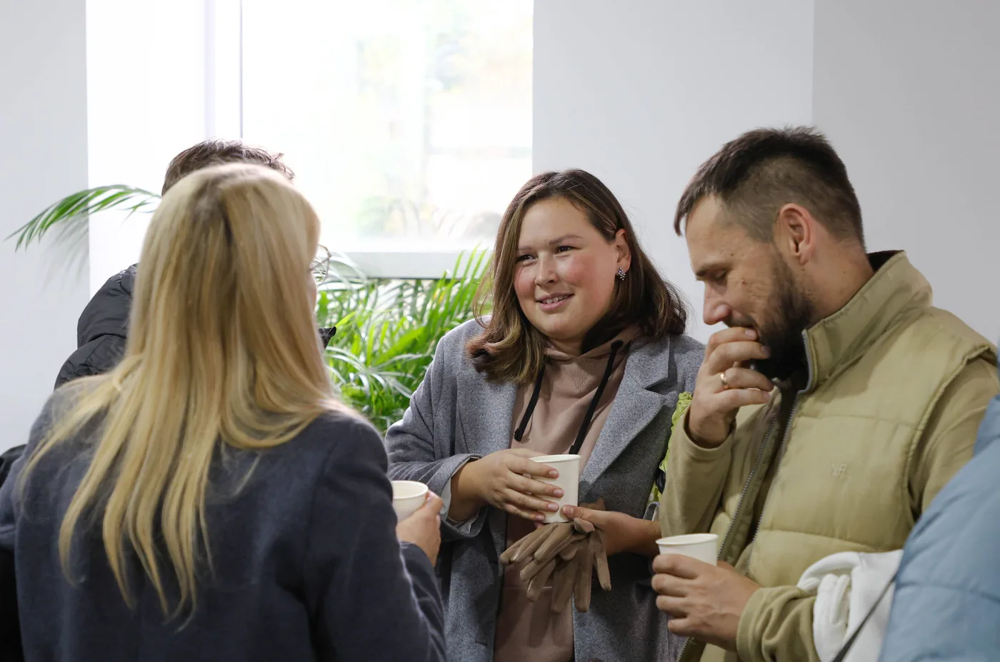

Ви вперше у нас?
Ласкаво просимо до нашої церкви
Ми раді бачити вас! Незалежно від того, де ви знаходитесь на своєму духовному шляху, для вас є місце в нашій церкві.
Як добратись?
Що на вас чекає?
- 1Щира та дружня атмосфера, де кожен відчуває себе як вдома.
- 2Пісні прославлення Бога.
- 3Практичне та зрозуміле вчення з Біблії.
- 4Чудова недільна школа з програмою для ваших дітей.